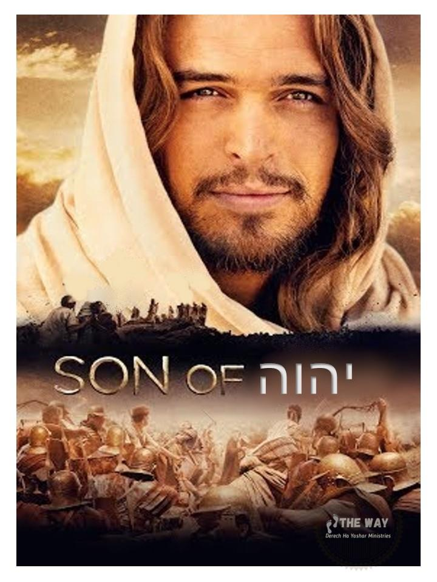

The writer of Mishle/Proverbs paints a mysterious picture of a figure who bears the name of יהוה's son and asks the reader to identify him. But is the idea of יהוה having a son actually Jewish?
Mishle/Proverbs 304Who has gone up to heaven and come down?
Who has gathered up the wind in the hollow of his hands?
Who has wrapped up the waters in his cloak?
Who has established all the ends of the earth?
What is His name, and the name of His son?
Tell me if you know!
The one who penned this section of Mishle, had reverence for יהוה. He understood the majesty and the glory of יהוה, and he reflected his faith and commitment to the "Worthy One" in these questions.
Our ancestors didn't miss the significance of the relationship to יהוה and His Anointed One (Messiah). As a matter of fact, they remark in a simile where "God, and His Messiah" are likened to a king and "the son of the king." (Yalkut, pare. 620, p. 90A, line 12 from the bottom.)
Did the Rabbis believe in the Son of יהוה?
From the Talmud, Sukkah (52a):
"Our rabbis taught, The Holy One, blessed be He, will say to the Messiah, the son of David (May he reveal himself speedily in our days), 'Ask of Me anything, and I will give to Thee,' as it is said (Psalm 2:7,8): 'I will tell of the decree: the Lord hath said unto me, 'Thou art My son; this day I have begotten Thee. Ask of Me and I will give the nations for Thine inheritance.'"
And in the mystical writing of the Zohar:
"Behold Jehovah, rideth swift upon a cloud."
"…it is the Son, of Whom it is written, 'Kiss the Son'; Thou art the Son, the faithful shepherd; of Thee it is said, 'Kiss the Son.' Tho Thou art the Governor of the universe, the Head of Israel, the Lord of the ministering angels, the Son of the Highest, the Son of the Holy and blessed One, yea of the very Shechinah."
- -Part 3, folio 307, Amsterdam edition
The Scriptures generally describe all things relative to יהוה using human terms i.e. physical to spiritual parallels. This literary technique, called anthropomorphism, is one of the primary means used in Scripture to lead us into an understanding of יהוה.
Anthropomorphism:
Attribution of human characteristics to nonhumans: the attribution of a human form, human characteristics, or human behaviour to nonhuman things such as deities in mythology and animals in children's stories.
This is commonly done in the Scriptures with reference to יהוה's "heart", "hand", "finger", etc. Attributes of personality such as "jealousy", "will" or "desire", "hate", and many other "emotions" are anthropomorphic. The reason for this technique is so that mankind, who is incapable of truly understanding the infinite Almighty, can grasp the basics of what is beyond our ability to understand.
The reference to Yahushua as יהוה's "son" is one of these techniques to help us understand the relationship between יהוה and all His chosen. It may surprise most Christians to realize Yahushua was not the ONLY "son of יהוה" mentioned in Scripture! Shelomoh /Solomon was referred to as יהוה's son:
Shemu’el Bet/2 Samuel 7:1414I will be his father, and he shall be my son. If he commits iniquity, I will chasten him with the rod of men, and with the stripes of the children of men.
Proof of this referring to Shelomoh is found in Dibre ha Yamim Aleph/1 Chronicles 28:6
Dibre ha Yamim Aleph/1 Chronicles 28:6 (KJV)6And he (יהוה) said unto me (David), Shelomoh thy son, he shall build my house and my courts: for I have chosen him to be my son, and I will be his father.
It should be noted that verses regarding Shelomoh (and many other passages) are sometimes assumed to refer to Messiah. I agree, however, I feel the correct standard method of interpreting Scripture is to first look for a DIRECT application first and then the spiritual parallel. Continuing with the sons of יהוה mentioned in Scripture... The entire nation of Yisra’el is referred to as יהוה's sons!
Shemoth/Exodus 4:2222And thou shalt say unto Pharaoh, thus saith יהוה, Yisra’el is my son, even my firstborn:
Adam was the "son of יהוה" also.
Luqas 3:3838Which was the son of Enos, which was the son of Seth, which was the son of Adam, which was the son of יהוה.
All TRUE followers of יהוה's Set-apart instructions (Torah) are called sons of יהוה. Therefore, it is SCRIPTURALLY accurate to say there is reference to well over 600,000 "sons of יהוה" in Scripture, since Yisra’el is יהוה's son. This is something Traditional Christian teachers hate to have revealed.
Shemoth/Exodus 12:3737And the children of Yisra’el journeyed from Rameses to Succoth, about six hundred thousand on foot that were men, beside children.
The term "son of יהוה" is always used in an anthropomorphic sense to refer to יהוה's representative(s) i.e. “sons”. Of course, as THE greatest, most obedient, and most exalted of ALL of יהוה's representatives, Yahushua, is indeed, THE son of יהוה.
Yahushua is the ultimate tsadik, or pious and righteous servant and representative of יהוה. Also, of course, if one wishes to accept the virgin birth, Yahushua can be further seen as being a "son" of יהוה. However, the Virgin Birth, the teaching that Yahushua was conceived of a virgin outside of the seed of Yoseph threatens Yahushua's claim to being the Messiah and disqualifies him. So, there is nothing within the context of the virgin birth that makes Yahushua any more of a son of יהוה than any other men.
The Brit Chadashah/New Testament suggests to us the exact moment that Yahushua was "begotten" of יהוה! Yes, believe it or not, we can know the precise time of the final "begetting" of Messiah Yahushua.
In Ma’asei/Acts 13 Sha’ul is speaking to those gathered in a synagogue of Antioch. In this single chapter the entire gospel is summed up in one of the most concise presentations to be found anywhere in Scripture. During this sermon Sha’ul reveals the exact moment that Yahushua's "begotten" status was completed.
Ma’asei/Acts 13:3333 יהוה has fulfilled this for us their children, in that He has risen Yahushua. As it is also written in the second Psalm: "You are My Son, Today I have begotten You."
The Tehillim/Psalm to which he refers is:
Tehillim/Psalm 2:77I will declare the decree: יהוה has said to Me, "You are My Son, Today I have begotten You."
Here we have that special Son of Elohim, recognized by David as much more than one of his earthly descendants, but also the Anointed One of יהוה. He closes with an admonition to do homage to the Son (verses 11 and 12). Rabbi Ibn Ezra of Spain wrote during the twelfth century, "The exhortation to submit to יהוה is followed by the exhortation to do homage to יהוה 's Son." Yes, our rabbis knew of the Son of Elohim and called Him the Messiah.
Therefore, we see the SCRIPTURAL day Yahushua was begotten - THE SCRIPTURAL DAY HE FULLY BECAME THE SON OF יהוה. It was on the day of his resurrection. This, also, is how he became the "first fruits of the resurrection" and the full "son of יהוה." The announcement of the angel Gabriel in Luqas presents in the future tense the fact that Yahushua "will be called the Son of the Highest." This prophecy from Gabriel had its fulfilment at Yahushua's resurrection.
Luqas 1:3232He will be great and will be called the Son of the Highest; and יהוה will give Him the throne of His father David.
It is common sense that one that is "begotten" is not eternal but has a beginning; therefore, the "begotten one" (Yahushua) cannot be the "Eternal One," יהוה. I would argue that the resurrection is the COMPLETION of the PROCESS of Yahushua's becoming יהוה's Son. He was already His Son as defined previously in terms of being יהוה's perfect representative, agent, servant, and anointed One. I do not accept the virgin birth as it is taught. I consider it to be an attempt by those lead by the spirit of error (spirit of the False Messiah) to usurp Yahushua's rightful claim to be the Messiah of Yisra’el. The doctrine of the Virgin Birth eliminates the primary importance of him being of the literal seed of David through the father as Scripture demands!
Upon his resurrection, Messiah Yahushua became THE Son of the Highest due to the fact that Yahushua was the very first man EVER resurrected to eternal life!
Romiyim/Romans 1:3-43 concerning His Son Yahushua the Messiah our King, who was born of the seed of David (the son of man, the man Yoseph) according to the flesh (the “seed” of יהוה is Spirit not flesh), 4and declared to be the Son of יהוה with power according to the Spirit of set-apartness (this is the “seed” of יהוה), by the resurrection from the dead.
Yahushua prior to resurrection was 100% human the product of the seed of Yoseph and Maryam like all humans; fully human in every way as Sh’aul put it. יהוה has no physical seed and in no way “impregnated Maryam” as is taught. That is a pagan philosophy out of Babylon (Ishtar being impregnated with Tammuz by the rays of the sun Elohim Ba’al). If Yahushua was in any way the Spiritual Son of יהוה while on Earth, death would have been impossibility. The fact Yahushua died is the “nail in the coffin” of the false doctrine of Incarnation.
Luqas 20:3636 for they cannot even die anymore, because they are like angels, and are sons of יהוה, being sons of the resurrection.
Again, we see above that you are not fully begotten by the seed of יהוה until resurrection. Only once your body is transposed to The Kingdom of יהוה through resurrection are you truly begotten by יהוה in His full image as an eternal son.